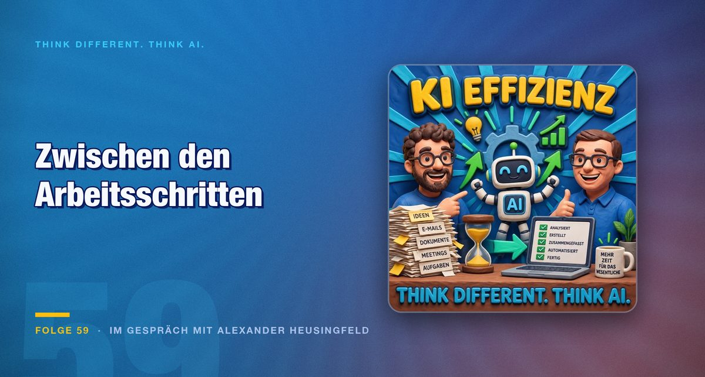

Folge 59 · Im Gespräch mit Alexander Heusingfeld
KI-Effizienz messen: Warum die Wartezeit zählt, nicht der Arbeitsschritt
Wer 80 Prozent seiner Belegschaft entlässt, behauptet damit den Faktor fünf. Belegen lässt sich das nicht. Was sich belegen lässt, steht an einer anderen Stelle im Prozess.

Eine Untersuchung zum Änderungsmanagement im Flugzeugbau kommt zu einem Ergebnis, das jede Effizienzdebatte einnorden sollte: Nur 8,5 Prozent der gesamten Durchlaufzeit sind wertschöpfende Zeit. Auf einen Tag Arbeit kommen grob zwei Wochen Warten. Wer an dieser Verteilung nichts ändert, kann den Arbeitsschritt selbst beliebig beschleunigen und wird am Ende kaum etwas messen.
Was die 80-Prozent-Rechnung verschweigt
Seit Monaten geht die Meldung durch die Presse, Unternehmen entließen 80 Prozent ihrer Leute, weil die Arbeit jetzt die KI erledige. Alexander Heusingfeld, zum dritten Mal im Podcast zu Gast, rechnet nach: Wer 80 Prozent entlässt und dieselbe Leistung erwartet, behauptet damit den Faktor fünf. Klarna hat den Schritt für den Kundenkontakt inzwischen wieder zurückgenommen.
Der eigentliche Einwand liegt woanders. Wer vorab 80 Prozent aussortiert, muss wissen, welche 20 Prozent das Skillset haben, der Maschine beizubringen, was am Ende herauskommen soll. Wer selbst noch nicht ausprobiert hat, was möglich ist, kann das nicht beurteilen. Die Entscheidung fällt also genau dann, wenn die Grundlage dafür am dünnsten ist.
Mark dreht die Frage um. Statt zu fragen, wen man nicht mehr braucht, interessiert ihn, was bisher liegen geblieben ist. In vielen Organisationen gibt es Vorhaben, die an fehlender Kapazität scheitern, nicht an fehlender Idee. Dazu kommen regulatorische Pflichten wie der Cyber Resilience Act oder NIS 2, bei denen selbst Behörden ausgenommen werden, weil die Kapazität fehlt. Freigewordene Zeit hat dort eine Verwendung.
Selbstberichtete Geschwindigkeit ist keine Messung
Fragt man Entwickler, wie viel schneller sie durch Assistenzsysteme geworden sind, liegt die Antwort erfahrungsgemäß bei mindestens 20 Prozent. Es gibt inzwischen Fälle, in denen Unternehmen nachgemessen haben. Die Entwickler gaben 25 Prozent an. Tatsächlich waren sie bis zu 20 Prozent langsamer, weil deutlich mehr Zeit in Pull-Request-Reviews und Nachbesserungen floss.
Daraus folgen drei Regeln, die Heusingfeld als sein Learning formuliert. Erstens: nie eine einzelne Kennzahl. Eine einzelne Zahl lädt dazu ein, sie zu optimieren statt das Ergebnis. Nötig ist ein Bündel aus Zielgrößen und Rahmenbedingungen, wobei die Rahmenbedingungen unverändert bleiben müssen. Zweitens: Gegenkennzahlen mitlaufen lassen. Change Fail Rate, Lead Time, Work in Progress, Developer Experience. Sie sollen sich verbessern oder wenigstens nicht verschlechtern. Drittens: eine Baseline ziehen, bevor etwas eingeführt wird, und gemeinsam mit den Beteiligten festlegen, wie kalibriert wird.
„Effizienzbehauptungen ohne Baseline sind Erzählungen.“
Als konkrete Metrik für die tägliche Arbeit schlägt er den Verifikationsaufwand je ausgelieferter Änderung vor. Wer Commits prüft und wiederholt zurückweisen muss, hat keine Modellschwäche, sondern unscharfe Abnahmekriterien. Sinkt dieser Aufwand, sind die Kriterien besser geworden. Das ist eine Größe, die sich ohne Projekt und ohne Werkzeugeinführung beobachten lässt.
Was ein Wochenende kostet und was es einbringt
Mark erzählt die Gegenprobe aus der Praxis. Auf einem Mac mini hinter dem Fernseher richtete er einen Coding-Agenten ein und gab ihm Zugriff auf alte, liegengebliebene Git-Projekte. Das System sah sich das Smart Home an und schlug vor, die vorhandenen Lautsprecher als Sprachschnittstelle zu nutzen, damit die Interaktion nicht am Schreibtisch kleben bleibt. Es schaltete die Geräte auf Aufnahme und ermittelte selbst, welcher Lautsprecher den Nutzer am besten versteht.
Das Ergebnis: eine liegengebliebene iOS-App, die Screenshots auswertet, fertig gebaut, signiert und über TestFlight auf dem Telefon. Bundle Identifier und Signierungszertifikate erstellte das System selbst, Passwörter musste Mark von Hand nachreichen. Die Diskussion darüber führte er, während er einen Schrank aufbaute. Der Preis: mehrere aufgebrauchte Wochenlimits.
Ob das effizient war, hängt davon ab, was gemessen wird. Gemessen an den Limits sicher nicht. Gemessen am Zustand der Projekte, die seit Jahren lagen, durchaus. Im beruflichen Kontext, sagt Mark selbst, würde er strukturierter vorgehen, mit Skills statt im freien Spiel.
Heusingfeld hält dagegen ein Beispiel mit klarer Kostenrechnung: die eigene Steuererklärung, knapp 800 Belege, überwiegend Fotos. Er gab dem System Abnahmekriterien mit, darunter die Vorgabe, mindestens 80 Prozent der Belege zuzuordnen und die Belege nach aufsteigender Zuordnungssicherheit durchzugehen. Nach gut drei bis vier Stunden lag das Ergebnis vor, Kosten rund 60 Euro. Nebenbei wies das System auf Positionen hin, die im Vorjahr anders hätten abgerechnet werden können.
Wenn die Flut zum Engpass wird
Ein Punkt der Folge verdient besondere Aufmerksamkeit, weil er die Effizienzrechnung von der individuellen auf die Teamebene hebt. Arbeitet eine Person drei Tage mit einem Agenten durch, entsteht ein Änderungsumfang, den der Rest des Teams nicht mehr prüfen kann. Das Backlog ist am dritten Tag eines zweiwöchigen Sprints leer. Die Diskussion verschiebt sich von der Frage, was zu tun ist, zur Frage, wie die Menge zu bewältigen ist.
Damit verlagert sich der Engpass, er verschwindet nicht. Und er verlagert sich dorthin, wo noch Menschen arbeiten. Wer darauf mit einem weiteren Agenten antwortet, der die Reviews übernimmt, bekommt ein zweites Problem: Ein gesprächiges Modell erzeugt mehr Änderungen, die prüfende Instanz erzeugt daraufhin mehr Kommentare, das erste Modell arbeitet nach. Die Tokenkosten steigen auf beiden Seiten, das Ergebnis bleibt gleich.
Praktische Gegenmittel nennt die Folge ebenfalls. Ein Team sollte im selben Harness arbeiten, weil gemischte Umgebungen unterschiedliche Optimierungsschwerpunkte setzen und sich gegenseitig in die Quere kommen. Kommentare im Quelltext sollten die Fachlichkeit beschreiben, nicht die Technik, weil ein Agent sonst den Kommentar liest statt den Code. Und ein regelmäßiges Umbenennen von Funktionen und Variablen legt offen, wo Code erzeugt wurde, der nie aufgerufen wird.
Fazit
Wer Effizienz durch KI belegen will, braucht zwei Dinge, die nichts mit Modellauswahl zu tun haben: eine Baseline und eine Vorstellung davon, wo die Zeit tatsächlich vergeht. Beides ist unbequem, weil es vor dem Werkzeug kommt und nicht danach.
Für den Einstieg genügt eine kleine Messung. Nehmen Sie einen Vorgang, der regelmäßig durch Ihre Organisation läuft, und tragen Sie ein, wie viel Zeit darin Bearbeitung ist und wie viel Warten auf eine Freigabe, eine Übergabe oder eine Rückmeldung. Liegt das Verhältnis auch nur in der Nähe der 8,5 Prozent aus der genannten Untersuchung, dann ist der Arbeitsschritt nicht der Ort, an dem sich etwas gewinnen lässt.
Die zweite Messung betrifft die eigene Arbeit mit dem Modell: Wie oft müssen Sie ein Ergebnis zurückweisen, bevor es durchgeht? Diese Zahl ist aussagekräftiger als jede Einschätzung, wie viel schneller sich etwas anfühlt.